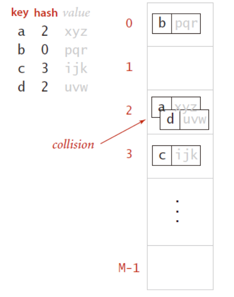
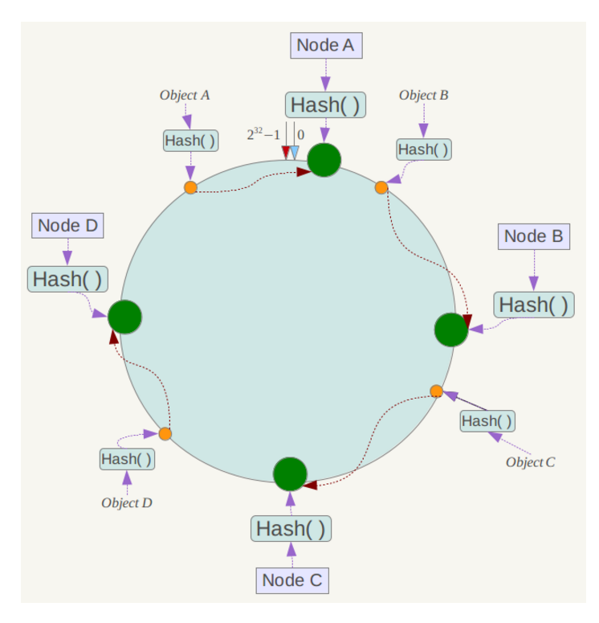
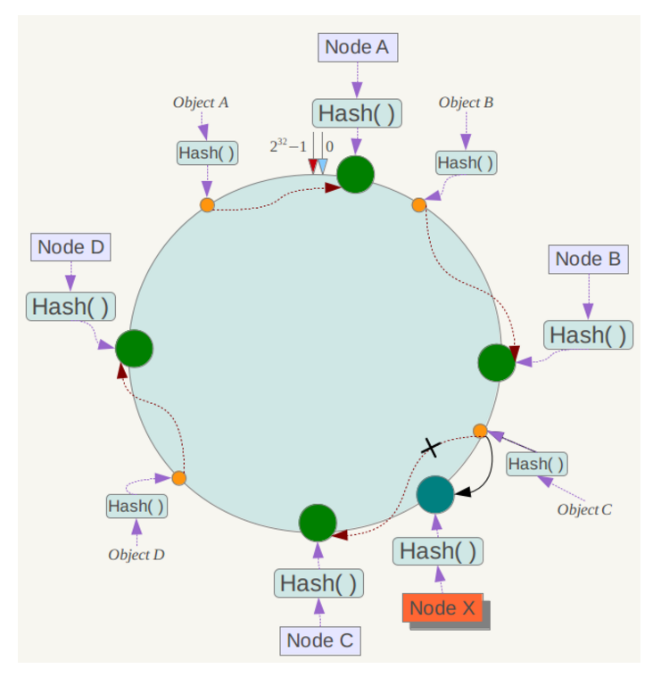

分布式基础（十五）——分布式理论之可扩展：一致性Hash
一、数据分片
可扩展性是指当系统的任务（work）增加时，通过增加资源来应对任务增长的能力。
分布式系统出现的目的之一就是解决单个计算机无法完成的计算、存储任务。那么当任务规模增加的时候，首先要考虑的问题就是：
如何对任务进行拆分，将任务的子集分配到每一个节点，每个节点只负责原问题（即整个系统需要完成的任务）的一个子集？
比如，在分布式存储系统中，任务的拆分就是数据分片，每个节点存储完整数据的一部分。
常见的数据分片算法包括：普通哈希（hash），一致性哈希（consistency hash），基于数据范围分片（range based）。
无论哪一种算法，都需要考虑以下问题：
- 如何划分原始数据集？
- 当原问题的规模变大时，能否通过增加节点来动态适应？
- 当某个节点故障的时候，能否将该节点上的任务/数据转移到其它节点？
每一种算法有各自的优缺点，也就有各自的适用场景。本文主要介绍一致性Hash，在这之前我们先来回顾下普通Hash。
二、普通Hash
学过数据结构的童鞋都对散列表（Hash Table，也叫哈希表）不会陌生，哈希表是通过把键值映射成整数作为数组的索引，并进行访问记录的一种数据结构。
关于哈希表的具体实现方式和原理，本文不再赘述，读者可以参考我的这篇文章：散列表。

基于普通hash的数据分片，也是这个思想，即按照数据的某一特征（key）来计算哈希值，并将哈希值与系统中的节点建立映射关系，从而将不同数据分布到不同的节点上。
基于普通hash的数据分片方式，优点就是简单易实现，但缺点也很明显：
- 容易出现数据倾斜，比如原始数据的特征值分布不均匀，导致大量的数据集中到一个物理节点上；
- 扩容或收缩时，会导致所有键值分布的重新计算，导致大量数据迁移，这个问题在大规模数据场景下是不可接受的。
三、一致性Hash
3.1 基本思想
传统的Hash算法将是以顺序表的形式组织Hash值空间，无法很好地解决节点平滑伸缩的问题。一致性Hash算法则将整个哈希值空间组织成一个虚拟的圆环，Hash函数的值空间为0—(2^32)-1。
整个空间按顺时针方向组织，0和(2^32)-1在零点中方向重合，如下图：

物理节点通过Hash函数进行哈希（比如选择服务器的IP或主机名作为关键字），这样就能确定物理节点在哈希环上的位置（如下图，NodeA、NodeB、NodeC、NodeD代表着四个物理节点）：

接下来就是数据的定位，也就是通过数据的Key找到对应的物理节点：
① 首先将数据key用相同的Hash函数计算出哈希值，这样就确定了此数据在环上的位置；
② 从该位置沿顺时针查找，直到找到第一个物理节点，这个物理节点就是数据存储的位置。

3.2 容错性
假设其中某台服务器宕机了（比如上图的NodeC），那影响的仅仅是该宕机服务器到其环空间中前一台服务器之间的数据，即沿着逆时针方向行走遇到的第一台服务器NodeB，其它数据不会受到影响。
这时一般需要将该宕掉的服务器中的数据重新hash计算，因为数据会落到该宕掉服务器的后一台服务器（NodeD）上。
3.3 可扩展性
假设需要扩容，新增一台服务器（比如下图的NodeX），那受影响的数据仅仅是新服务器到其环空间中后一台服务器之间的数据，即沿着顺时针方向行走遇到的第一台服务器NodeC，其它数据也不会受到影响。
这时一般需要将该前一台服务器C中的数据重新hash计算，因为部分数据可能会落到该新增服务器上。

3.4 优缺点
优点：
一致性hash算法对于节点的增减都只需重定位环空间中的一小部分数据，具有较好的容错性和可扩展性。当节点数越多的时候，使用一致哈希时，需要迁移的数据就越少。此外，不需要维护路由信息。
缺点：
物理节点较少时，数据分布不均，造成数据倾斜，有时也叫缓存热点问题，比如大量hash数据涌入同一个节点。
3.5 虚拟节点
针对一致性hash的数据倾斜问题，一个比较好的方案是引入”虚拟节点“。
所谓虚拟节点，就是为原来的每个物理节点计算多个哈希，每个计算结果的位置作为一个虚节点，hash环上只放置虚拟节点，然后额外进行真实物理节点与虚拟节点的映射：

例如：上面的情况中，为每台物理节点（NodeA、NodeB、NodeC）新增三个编号，于是形成六个虚拟节点：“NodeA#1”、“NodeA#2”、“Node A#3”、“Node B#1”、“Node B#2”、“Node B#3”。
而数据定位算法不变，通过数据的Key可以找到虚拟节点的hash环位置，然后可以维护一个物理节点<->虚拟节点的映射关系表，从而找到实体节点的位置。
物理节点与虚拟节点的映射，可以采用服务器ip或主机名的后面增加编号的方式
四、总结
本章，我主要对数据分片的路由算法进行了讲解，介绍了传统hash存在的一些问题，同时介绍了一致性hash的原理。一致hash是一种特殊的哈希算法，在使用一致哈希算法后，节点增减变化时只影响到部分数据的路由寻址，也就是说我们只要迁移部分数据，就能实现集群的稳定。